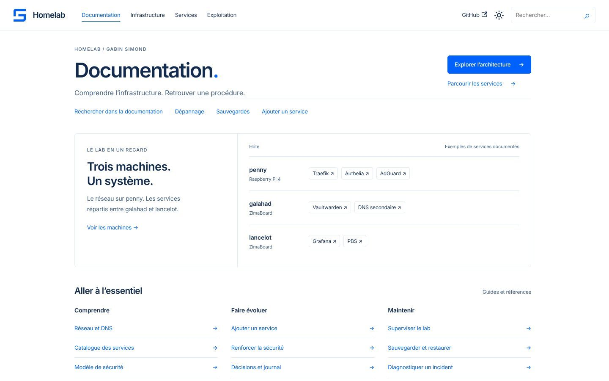

Votre problématique métier, un outil sur mesure.
Gabin Simond, ingénieur cybersécurité et consultant intégration. Je pars de votre métier, puis je construis, je sécurise et j’héberge l’outil qui y répond, en indépendant.

Services
Consultant intégration, j’ai une double vision : le produit et le métier d’un côté, la solution technique de l’autre. Chaque outil part d’un besoin concret.
-
Gérer un concours de pétanque, même sans réseau au boulodrome
-
Outiller des streamers sans rien leur faire installer
-
Donner aux danseurs leur licence, leurs compétitions et leur musique d’entraînement
-
Gérer une école de danse
École SaaS
Et aussi
- Sites WordPress clés en main. Installation, certificat SSL, protection contre les attaques courantes, sauvegardes automatiques, nom de domaine et hébergement.
- DevSecOps et sécurisation. Analyse du code, détection de secrets, scan des images, dépendances tenues à jour.
- Auto-hébergement et infrastructure. Services sous Docker, reverse proxy, authentification, supervision, sauvegardes, avec leur documentation.
Un besoin précis ? Décrivez-le à contact@gabin-simond.fr ou au +33 7 61 16 89 18.
Demander un devisProjets
Des applications en ligne, que vous pouvez ouvrir.
-

Pétanque Concours
Gestion de concours de pétanque avec un mode hors-ligne complet : tirages, poules, tableaux et scores fonctionnent sans réseau au boulodrome, puis se synchronisent.
-

StreamBox
Une boîte à outils gratuite pour streamers : chat multi-plateformes, alertes, objectifs, sondages, giveaways, timer de subathon, en overlays OBS, sans rien installer.
-

FFD Connect
Danse sportive sur iPhone et Android, en bêta ouverte : licence consultable sans réseau, programme des compétitions, musique d’entraînement. Non affiliée à la Fédération Française de Danse.
-

Documentation Homelab
Le journal de bord public de mon homelab : architecture, services auto-hébergés, durcissement, observabilité et runbooks, de quoi tout reconstruire de zéro.


École SaaS, un SaaS de gestion d’école de danse. Dépôt privé.
Profil
Ingénieur du numérique spécialisé en cybersécurité, basé en France. J’aime comprendre comment les choses fonctionnent, puis les reconstruire à ma façon.
- Aujourd’hui
- Consultant intégration, entre le produit, le métier et la solution technique. Développeur indépendant en parallèle.
- Formation
- Diplôme d’ingénieur du numérique, spécialité cybersécurité. Formation labellisée SecNumEdu par l’ANSSI.
- Homelab
- Des ZimaBoard et un Raspberry Pi 4, du Docker, toute ma stack à la maison, et une documentation publique pour tout reconstruire.
Boîte à outils
Dans mes projets et sur mon homelab.
- Sécurité et DevSecOps
- Authelia, CrowdSec, Fail2ban, Vaultwarden, SOPS + age, YubiKey, Trivy, Gitleaks, CodeQL, Renovate, Restic
- Infra et homelab
- Proxmox, Docker, Debian, Raspberry Pi, ZimaBoard, Traefik, Caddy, Tailscale, Cloudflare, AdGuard Home, Terraform, Ansible, Forgejo, n8n
- Web et apps
- React, Vite, PWA, Node.js, Fastify, Bun, Vitest, Docusaurus, Cloudflare Workers, PostgreSQL, Redis
- Langages
- TypeScript, JavaScript, HTML, CSS, Bash
- Observabilité et CI/CD
- Grafana, Prometheus, Loki, GitHub Actions, Git
Un projet ? Demandez un devis.
Décrivez votre besoin, votre contexte et votre échéance.